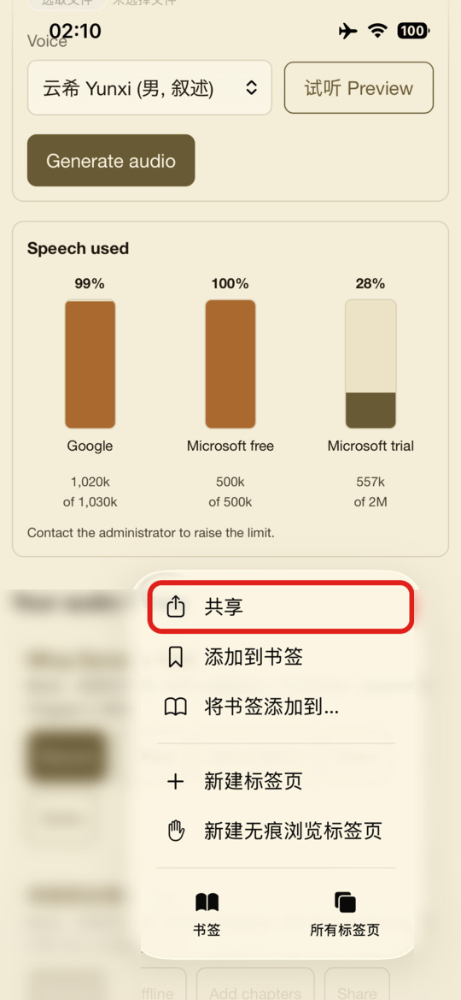
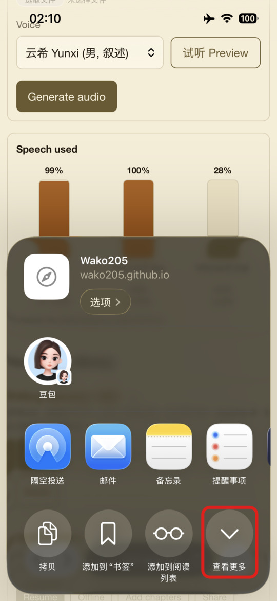
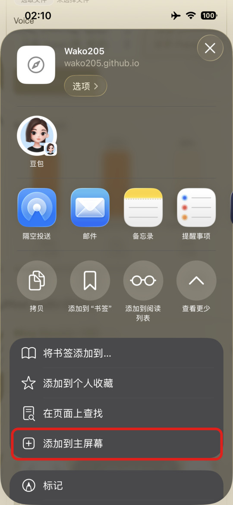
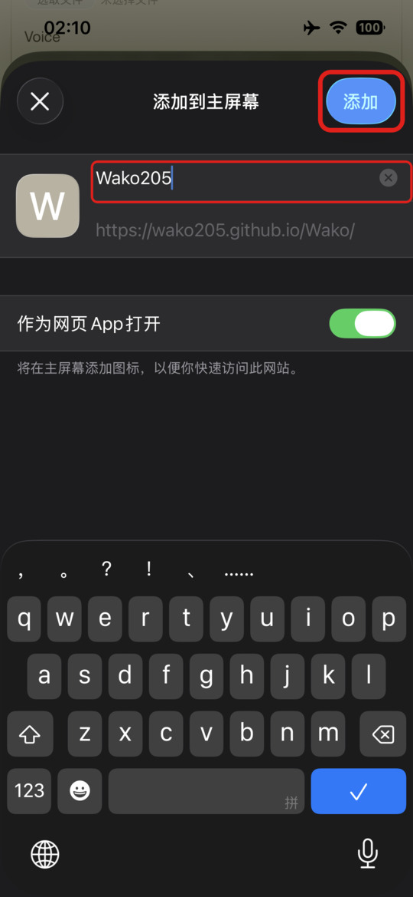

把「和光」添加到主屏幕
添加后，在 iPhone 主屏幕上点图标就能直接打开，像一个小 App。离线保存的章节也更不容易被 Safari 清理。
-
用 Safari 打开网站
在 iPhone 的 Safari 里打开 wako205.github.io/Wako，等页面加载完。必须用 Safari，微信或其他 App 里打开的页面不能添加到主屏幕。
然后点地址栏右边的 「⋯」（旧版 iOS 是屏幕底部的分享按钮 ⬆︎，点了直接跳到第 3 步）。
-
点「共享」
在弹出的菜单里点红框中的 共享（Share）。

-
点「查看更多」
共享面板打开后，点右下角红框中的 查看更多（More），展开全部选项。

-
点「添加到主屏幕」
在展开的列表里点红框中的 添加到主屏幕（Add to Home Screen）。

-
改名（可选），点「添加」
名字可以改成 和光（细红框）。「作为网页 App 打开」保持开启。最后点右上角粗红框中的 添加（Add）。
截图里的图标还是旧的「W」，现在添加时会显示「和光」图标。

以前添加过的旧图标（W）
iPhone 会把添加时的图标存在手机上，不会自动更新。请先长按旧图标，选 删除书签（只删快捷方式，登录和书库不受影响），再按上面的步骤重新添加一次。
Android 手机
用 Chrome 打开网站，点右上角 ⋮，选 添加到主屏幕（或 安装应用），再点 添加。